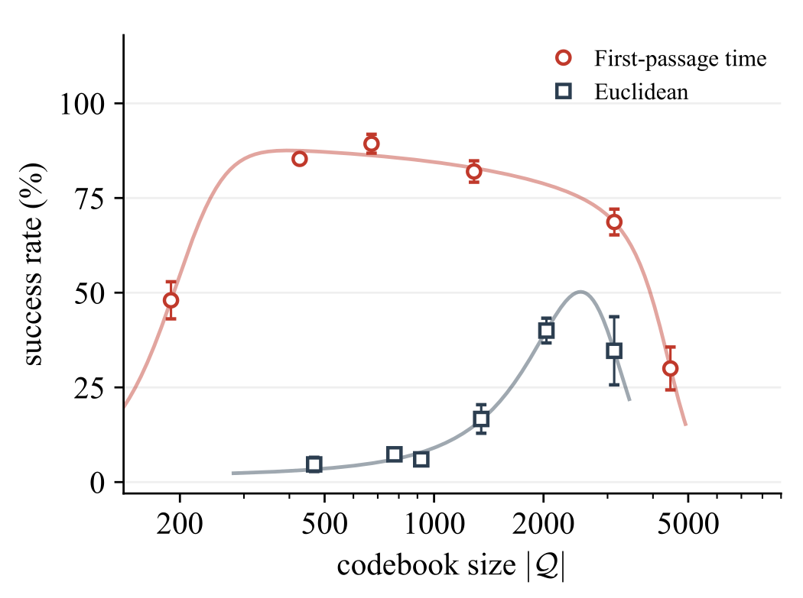

Overview
Couple the planning abstraction to the controller
Visual world models let a planner evaluate action sequences from pixels before acting. But as the horizon grows, autoregressive rollouts in continuous latent space accumulate error and the action sequence becomes harder to optimize. Hierarchical and vector-quantized planners shorten the search, yet a predicted subgoal is only useful if the execution mechanism can actually reach it. Classical feedback motion planning answers this by composing local controllers whose regions of attraction chain to the goal. VQ-WM brings that principle to learned visual latent spaces.
VQ-WM contributes three things:
- A latent feedback motion planning framework. Vector quantization turns the latent space into a compact graph of controller-reachable states. A discrete latent predictor models transitions between codes, breadth-first search finds the shortest code path to the goal, and a goal-conditioned controller tracks the path with continuous visual feedback.
- First-passage time as the quantization metric. Instead of Euclidean distance, states are grouped by how many controller calls it takes to reach a code. The estimate comes from closed-loop controller rollouts in a learned latent world model, so the codebook reflects what the controller can reach and stabilize.
- Validation in hardware and simulation. Learning from short play data, VQ-WM solves the physical four-disk Tower of Hanoi with 100% task progress. In simulation it surpasses H-JEPA by 13.3 to 34.6 percentage points on long-horizon manipulation, and adding proprioception to the controller raises Walker success from 22.0% to 97.3% without touching the planner.
Method
A slow discrete planner and a fast continuous controller
VQ-WM interleaves discrete planning over a controller-aware state codebook with continuous feedback control. Its components are a frozen pretrained encoder EZ, a goal-conditioned controller π, a continuous latent predictor PZ, state and action quantizers φZ, φU with codebooks Q, U, a latent action encoder EU, and a discrete latent predictor PQ.

Planning loop slow
Encode the initial and goal observations, quantize them to codes qinit and qgoal, then expand successor codes predicted by PQ(· | q, u) for every vector-quantized action u, building the graph online until the goal is found.
Breadth-first search over the most likely successors returns the fewest-transition path q0, …, qL. The plan is cheap enough to re-run in a receding-horizon loop, or to compute once per episode, which is how the experiments run.
Control loop fast
At every step the current observation is encoded to zt and the controller samples at ∼ π(· | zt, qi) toward the current planned code.
The controller follows the codes in order, starting at qinit and finally targeting zgoal. Each transition gets the number of controller calls that the first-passage-time estimate says it needs before the target switches, so visual feedback corrects local deviations instead of letting them compound.
First-passage time instead of Euclidean distance
First-passage time d(z, z′) is the number of controller calls until a closed-loop trajectory, started at z and driven by π toward z′, first enters an ε-neighborhood of z′. It is estimated by rolling π and PZ together in latent space, and set to ∞ if the target is not reached within the controller-call budget R.
Geometric proximity in latent space says little about the effort a feedback controller needs to reach a target. First-passage time is directed, controller-dependent, and measured in the controller’s own units, so it plays two roles at once. During training it defines each candidate code’s region of attraction R̂(e) = {z : d(z, e) ≤ R}, and a greedy set cover picks the smallest codebook whose regions cover the encoded dataset. Every latent state is then assigned to the code it reaches in the fewest calls. At inference it quantizes the initial and goal states and decides how many controller calls each planned transition is given.
With the state codebook fixed, the latent action encoder, action codebook and discrete predictor are trained jointly on code-to-code transitions observed in the offline trajectories, with a cross-entropy transition loss and the standard vector-quantization commitment loss.
Real-world experiments
Composing play data into a full Tower of Hanoi solution
A WidowX AI arm must move a four-disk stack to another rod, one disk at a time, never placing a larger disk on a smaller one. The optimal solution takes 15 puzzle moves (H15) and minutes of execution with precise grasping, alignment and disk insertion. Play data was collected autonomously at 30 Hz: a symbolic planner generated randomized legal move sequences from board states detected by the video object segmentation model Cutie, and each transfer ran a predefined Cartesian pick-and-place.


Expert data
Trained on complete solution demonstrations, Cosmos Policy and π0.5 both reach 100% task progress on single moves (H1) but drop to 76% and 23% on the full H15 puzzle as execution errors compound across disk transfers. V-JEPA 2-AC optimizes action sequences with the cross-entropy method and reaches 0% on both: extending its lookahead means searching longer sequences whose predicted outcomes grow unreliable, and intermediate puzzle moves do not immediately bring the observed state closer to the goal. Hand-picking subgoal images raises it to 94%. VQ-WM searches the shortest path through controller-aware latent abstractions, computes the complete solution in a single planning call, and reaches 99.6% on H15.
Non-expert play data
Trained only on play-data subtasks of at most five moves, Cosmos Policy and π0.5 achieve 5% and 3%: behavior cloning does not compose short subtasks into full H15 solutions. V-JEPA 2-AC* with manual subgoals improves to 27%. VQ-WM achieves 100%, composing transitions it has seen into long-horizon plans and executing them reliably.
Simulation benchmarks
Manipulation and locomotion in Stable-WorldModel
On the Cube and Scene environments, the margin over the strongest baseline grows with the task horizon: 8.0 points on Cube-Easy, 13.3 on Cube-Hard and 28.0 on Scene. Two mechanisms explain the gain. Temporal straightening reshapes the latent space so Euclidean distance becomes a planning metric; VQ-WM keeps the encoder frozen and learns the geometry through first-passage time instead, reaching 73.3% on Cube-Hard where TS fails at 10.7%. And where H-JEPA predicts subgoals the controller may fail to reach, VQ-WM plans over reachable codes, consistent with its 13.3-point gain on Cube-Hard.
| Method | Cube-Easy | Cube-Hard | Scene |
|---|---|---|---|
| LeWM | 74.0 ± 2.8 | 32.0 ± 6.1 | 42.7 ± 1.9 |
| TS | 68.0 ± 2.8 | 10.7 ± 0.9 | 47.3 ± 2.5 |
| PLDM | 62.0 ± 4.3 | 11.3 ± 3.8 | 44.7 ± 4.1 |
| H-JEPA | 76.7 ± 2.5 | 60.0 ± 5.0 | 40.7 ± 2.5 |
| VQ-WM (ours) | 84.7 ± 2.5 | 73.3 ± 0.9 | 75.3 ± 5.0 |
Walker goal images are sampled 50 steps ahead of expert trajectories, and success requires torso height, torso pitch and all six leg joint angles within 0.3 of the goal. From images alone, both DINO-WM and VQ-WM do poorly because such poses depend on joint coordination the images barely convey. Adding proprioception to the controller lifts VQ-WM to 97.3% while DINO-WM stays at 12.0%: the extra input improves the controller, the controller-aware codebook adapts to what it can now reach, and the planner is untouched.
Table view
| Method | Images | Images + proprio. |
|---|---|---|
| DINO-WM | 12.7 ± 3.4 | 12.0 ± 4.9 |
| VQ-WM (ours) | 22.0 ± 5.9 | 97.3 ± 2.5 |
Ablation
Why first-passage time, not Euclidean distance
On a MuJoCo version of the same Tower of Hanoi setup, with 104 walk trajectories covering all legal disk moves, only the quantization metric is swapped; encoder, controller and training are unchanged. Each point averages three seeds of 50 trajectories with shortest-path lengths of 1 to 15 disk moves.
First-passage time peaks near 90% success against 40% for Euclidean distance, and holds across codebook sizes from roughly 250 to 2000, an eightfold range. Very small codebooks merge distinct puzzle configurations and produce unexecutable plans; very large ones leave too few observed examples per transition for the discrete predictor to learn from.
Euclidean quantization ignores controller reachability, so consecutive planned targets may be unreachable. It also declares a target reached when ‖zt − qi‖2 ≤ ε, and latent proximity does not always mean physical arrival, so the controller may switch targets too early or never switch. The first-passage-time variant instead budgets each target with the controller calls the latent predictor estimates it needs.

Citation
BibTeX
The BibTeX entry will be added when the preprint is public.